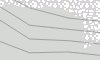

Flächen:
 |
Wohngebiet |  |
Militärisch genutztes Gebiet, Kasernen, Truppenübungsplätze, usw. |
 |
Parkplatz (öffentlich) |  |
Handel, Einkaufszentrum oder Bereich mit überwiegend Einzelhandelsgeschäften |
| Parkplatz (eingeschränkt, z.B. für Kunden) |  |
Parkplatz (privat) | |
| Jachthafen, Liegeplatz für Jachten und Motorboote | Schule, Hochschule, Universität, Campus oder Gebäude | ||
 |
Krankenhaus | Industrie- / Gewerbegebiet, überwiegend Werkstätten, Fabriken oder Lagerhallen; für Gleise und Bahnhöfe genutztes Eisenbahngelände | |
| Naturschutzgebiet |  |
Spielplatz für Kinder | |
| Campingplatz, Stellplatz für Wohnmobile |  |
Gehöft, landwirtschaftlich genutzte Flächen mit Gebäuden wie Häusern, Ställen, Fahrzeughallen, Futterspeichern usw. | |
| Rohstoffabbau oberirdisch, Steinbruch, Grube (Kies, Ton, ...), Tagebau | Gebäude | ||
 |
Forst, landwirtschaftlich genutzer Wald; Naturwald; differenziert nach Misch-, Laub- oder Nadelwald |  |
Wiese, meist außerorts |
| Golfanlage |  |
Kartenhintergrund | |
 |
Friedhof |  |
Weinberg, Wengert |
| Park, Grünanlage | Gefahrenzone, Sperrgebiet | ||
 |
Zoologischer Garten, Tierpark |  |
Kleingarten, Schrebergarten, Grabeland |
|
Kulturland, landwirtschaftlich genutzte Flächen wie Äcker und Baumschulen. Diese Fläche ist identisch mit dem Kartenhintergrund. | Kraftwerk, dient der Erzeugung von Strom oder Wärme; Umspannwerk, Umspannstation | |
 |
Verwaltung, Büros |  |
Baugebiet (aber auch Brachland) |
| Deponie, Aufschüttung, Müllhalde |  |
Heide | |
| Strand | Schlick, Moor | ||
| Unkultiviertes Land, Unterholz, Busch, Gebüsch |  |
Weg, Platz oder Straße auf der nur Fußgänger erlaubt sind, z.B. Fußgängerzone oder Einkaufspassage | |
| Spielfeld, Laufbahn |  |
Wasser allgemein, Meer, Seen, Teiche, Flüsse, Speicherbecken usw. | |
 |
Alm, Bergwiese, Matten, Bereich oberhalb der Baumgrenze |  |
Sportanlage, Stadion |
| Geröll |  |
Boden mit Sand bedeckt, kein oder nur spärlicher Bewuchs | |
|  | Fels |  |
Feuchtgebiet, Sumpf, Moor, Ried, Marsch, Aue, Röhricht, Watt, Salzwiese |
 |
Gletscher, Gebiet, das ganzjährig mit Eis bedeckt ist |  |
Obstplantage, Obstgarten, Gemüseanbau, Anpflanzung von Bäumen oder Sträuchern zur Lebensmittelproduktion |
Anmerkungen:
- Kulturland (Ackerland) ist in vielen Ländern die am häufigsten vorkommende Fläche (in Deutschland 33%). Diese Fläche wird nicht separat ausgewiesen, sondern ist identisch mit dem Kartenhintergrund.
- Wald (Naturwald, Forst) bedeckt in vielen Ländern bedeutende Flächen (in Deutschland 30%) und ermöglicht somit eine gute Groborientierung.
- Größere Punkte stellen stilisierte Menschen für belebte Bereiche (Schule, Einkaufspassage, Platz, Spielplatz, ...) dar.
- (Gitter-)Schraffuren werden für Bereiche mit Zugangseinschränkungen (mil. Bereich, Baugebiete, Kraftwerk, Schrebergarten, Privatparkplatz, ...) verwendet.
Straßen und Wege:
| Straßen: | |
 |
Autobahn, Straße mit baulich getrennten Fahrtrichtungen (im allgemeinen Grünstreifen) und besonderen Nutzungsbeschränkungen (Einbahnstraße, Verbot für Fußgänger und Radfahrer). Typischerweise zwei Fahrspuren je Fahrtrichtung oder mehr und ein Standstreifen. |
| Autobahnanschlussstelle, typischerweise mit den gleichen Nutzungsbeschränkungen wie die Autobahn selber. | |
 |
Autobahnähnliche Straße, aber keine Autobahn. |
 |
Bundesstraßenanschlussstelle, analog zu Autobahnanschlussstelle. |
 |
Bundesstraße, Hauptverbindungsstraße unter zentraler Verwaltung mit besonderer Kennzeichnung, die meist größere Städte verbindet und dem überregionalen Verkehr dient. Außerdem: Straßen mit übergeordneter Verkehrsbedeutung. |
 |
Land- oder sehr gut ausgebaute Kreisstraße (oder Auffahrt hierauf) Straße mit Mittellinie, die kleinere Städte oder größere Orte verbindet. Die Straße dient dem zwischenregionalen Verkehr. |
| Kreisstraße, sehr gut ausgebaute Gemeindeverbindungsstraße, die in erster Linie regionalen Verkehrsbedürfnissen dient. Wenig befahrene Vorfahrtstraße, die kleinere Orte verbindet. Innerstädtische Vorfahrtstraßen mit Durchfahrtscharakter. | |
 |
Wohngebietsstraße, Straße an und in Wohngebieten, die keiner anderen Straßenklasse angehört. |
 |
Nebenstraße, öffentlich befahrbare Nebenstraße mit einfachstem Ausbauzustand, typischerweise keine Mittellinie. Z.B. Gemeindestraßen mit Verbindungscharakter, die zu schmal sind, um als Kreisstraße zu gelten. |
| Erschließungsstraße oder -weg, Zugang / Zufahrt zu Einrichtungen wie Sportanlagen, Stränden, Autobahnraststätten oder allgemein zu Gebäuden. | |
| Verkehrsberuhigter Bereich, eine Straße in der auf spielende Kinder aufgepasst werden muss, Fußgänger bevorzugt behandelt werden und nur Schrittgeschwindigkeit erlaubt ist. |
|
| Straßen und Wege mit Nutzungsverbot für den Kraftverkehr: - Die Benutzung ist für Kraftfahrer nicht erlaubt oder nicht möglich. - Der Privateigentümer erlaubt die Benutzung für Kraftfahrer in der Regel nicht. |
|
| Straßen und Wege mit generellem Nutzungsverbot: - Die Benutzung ist generell nicht erlaubt oder nicht möglich. - Der Privateigentümer erlaubt die Benutzung in der Regel nicht. |
|
 |
Straßen und Wege mit Nutzungsbeschränkung für den Kraftverkehr: - Die Benutzung ist nur für den landwirtschaftlichen Verkehr erlaubt. - Die Benutzung ist nur für den forstwirtschaftlichen Verkehr erlaubt. - Die Benutzung ist nur zur Anlieferung von Waren zum Kunden erlaubt. |
| Sonstiges: | |
 |
Treppen, Treppen auf Fuß- oder Wanderwegen nur für Fußgänger. |
 |
Fußgängerzone, Platz auf der nur Fußgänger erlaubt sind (z.B. typisch für Einkaufspassagen). |
 |
Fußgängerstraße, Weg oder Straße auf der nur Fußgänger erlaubt sind (z.B. typisch für Einkaufspassagen). |
| Rad-, Fuß-, Reitwege, Pfade: Der Weg ist nicht breit genug für ein Fahrzeug. |
|
 |
Allgemeiner Fußweg, hauptsächlich für Fußgänger. |
 |
Kombinierter Rad- und Fußweg, gemeinsame Nutzung durch Radfahrer und Fußgänger. |
 |
Reitweg, ein Weg nur für Reiter. |
| Allgemeiner Weg oder Pfad, hier in der Bedeutung von Wanderweg / Trampelpfad; nicht breit genug für Fahrzeuge. | |
| Wirtschafts-, Feld- oder Waldwege. Der Weg ist breit genug für ein Fahrzeug. Es werden drei Ausbauformen unterschieden: |
|
| Güteklasse 1, befestigter Weg (Asphalt, Beton, Pflastersteine, etc.). | |
| Güteklassen 2,3 2 = Befestigter Weg (Schotter oder andere verdichtete Untergründe). 3 = Befestigter oder ausgebesserter Weg, der harten und weichen Untergrund enthält (z.B. Feinschotter-, Sand- oder Erdweg). |
|
| Güteklassen 4,5 4 = Unbefestigter Weg, hauptsächlich weiche Materialien, Pflanzenwuchs entlang der Spurmitte (z.B. Gras-, Sand- oder Erdweg). 5 = Unbefestigter Weg, Oberfläche besteht aus Sand, Erde etc., oft nur Abdruck im Gras, teilweise schwer von umgebendem Gelände unterscheidbar. |
|
| (Berg-)Wanderwege. Es werden drei Schwierigkeitsgrade unterschieden: |
|
 |
Wanderweg, T1 oder T2 T1 = Wanderweg T2 = klassischer Bergweg |
| Wanderweg, T3 oder T4 (anspruchsvolles Bergwandern bzw. Alpinwandern; erfordert entsprechende Erfahrung) T3 = anspruchsvoller Bergweg T4 = alpiner Wanderweg |
|
 |
Wanderweg, T5 oder T6 oder Klettersteig (anspruchsvolles Alpinwandern; erfordert entsprechende Erfahrung) T5 = anspruchsvoller, alpiner Wanderweg T6 = schwieriger, alpiner Wanderweg Klettersteig (Via Ferrata) = gesicherter Kletterweg |
Anmerkungen:
- Freizeitaktivitäten im Gebirge erfordern entsprechende Erfahrung und bergen Gefahren. Alleine mit dieser Karte sollte keine Bergtour geplant werden.
- Bei Wirtschafts-, Feld- und Waldwegen der Güteklassen 2-5 wird generell davon ausgegangen, daß sie für den Kraftverkehr nicht geeignet sind. Nutzungseinschränkungen werden deshalb nicht gesondert ausgewiesen.
Points-Of-Interest (POIs):
| Information |  |
(signifikante) Bäume | |
| Berggipfel (meist mit Höhenangabe) | Industrieananlage | ||
 |
Quelle | Windkraftanlage | |
| Mast (einer Hochspannungsleitung) |  |
Flughafen | |
| Aussichtspunkt | Geldautomat (oder Bank) | ||
 |
Krankenhaus | Höhle | |
| Polizeistation |  |
U-Bahneingang | |
| (Zug-) Bahnhof | (Telekommunikations-) Mast | ||
| Haltestelle (Bus, Straßenbahn) |  |
Beobachtungsturm | |
 |
Tankstelle | Geschäft (Art des Geschäfts) | |
| Einkehr (z.B. Bar, Biergarten, Cafe, Kneipe, Eisdiele) |  |
jüdischer Anbetungsort (z.B. Synagoge) |
|
| muslimischer Anbetungsort (z.B. Moschee) |
 |
christlicher Anbetungsort (z.B. Kirche) |
|
 |
(S) Schule |  |
Museum |
| Unterstand, Schutzhütte |  |
Leuchturm | |
 |
Camping-, Caravanplatz | Hotel, Motel | |
| Gasthaus | (Kinder-)Spielplatz | ||
 |
Restaurant / Imbiss mit Art der Küche |
Rastplatz, -stätte | |
 |
Parken | eingeschränktes Parken | |
 |
(Autobahn-) Ausfahrt (mit Nummer und Bezeichnung) |
allgemeiner Point-Of-Interest mit Art und Bezeichnung |
|
 |
(Straßen-) Poller |  |
Tor |
| Schranke |  |
Umlaufsperre | |
 |
(militärischer) Bunker |  |
Ruine |
 |
Alpin Hut (mit Bewirtung), Berghütte |
Alpin Hut (ohne Bewirtung), Selbstversorgerhütte |
|
| Wilderness Hut, einfache Selbstversorgerhütte |
Basic Hut, Biwakhütte | ||
| Lean-To, offene Hütte mit Übernachtungsmöglichkeit |
 |
Scharte (Joch, Sattel) | |
 |
Seilbahnstation | Pass |
Anmerkungen:
- Sehr viele POIs werden durch einen farbigen Kreis dargestellt. Weitere Informationen zu diesen POIs erhält man, indem man die Karte vergrößert.
- Freizeitaktivitäten im Gebirge erfordern entsprechende Erfahrung und bergen Gefahren. Alleine mit dieser Karte sollte keine Bergtour geplant werden.